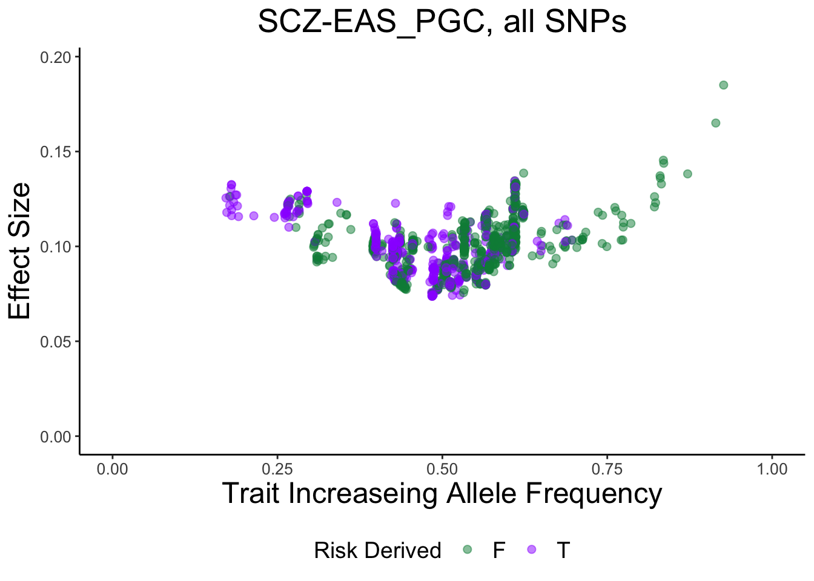
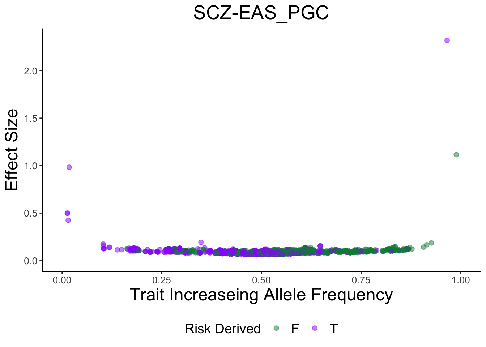

misc_gwas
Jennifer Blanc
6/8/2020
Last updated: 2020-06-29
Checks: 7 0
Knit directory: infer_mutational_bias/analysis/
This reproducible R Markdown analysis was created with workflowr (version 1.6.2). The Checks tab describes the reproducibility checks that were applied when the results were created. The Past versions tab lists the development history.
Great! Since the R Markdown file has been committed to the Git repository, you know the exact version of the code that produced these results.
Great job! The global environment was empty. Objects defined in the global environment can affect the analysis in your R Markdown file in unknown ways. For reproduciblity it’s best to always run the code in an empty environment.
The command set.seed(20191108) was run prior to running the code in the R Markdown file. Setting a seed ensures that any results that rely on randomness, e.g. subsampling or permutations, are reproducible.
Great job! Recording the operating system, R version, and package versions is critical for reproducibility.
Nice! There were no cached chunks for this analysis, so you can be confident that you successfully produced the results during this run.
Great job! Using relative paths to the files within your workflowr project makes it easier to run your code on other machines.
Great! You are using Git for version control. Tracking code development and connecting the code version to the results is critical for reproducibility.
The results in this page were generated with repository version ef2f9ef. See the Past versions tab to see a history of the changes made to the R Markdown and HTML files.
Note that you need to be careful to ensure that all relevant files for the analysis have been committed to Git prior to generating the results (you can use wflow_publish or wflow_git_commit). workflowr only checks the R Markdown file, but you know if there are other scripts or data files that it depends on. Below is the status of the Git repository when the results were generated:
Ignored files:
Ignored: .DS_Store
Ignored: .Rhistory
Ignored: .Rproj.user/
Ignored: .snakemake/conda-archive/
Ignored: .snakemake/conda/
Ignored: .snakemake/locks/
Ignored: .snakemake/shadow/
Ignored: .snakemake/singularity/
Ignored: analysis/.DS_Store
Ignored: code/.DS_Store
Ignored: code/parse_gwas_atlas/.DS_Store
Ignored: code/parse_gwas_atlas_nonsig/.DS_Store
Ignored: data/.ipynb_checkpoints/
Ignored: data/1000G_20101123_v3_GIANT_chr1_23_minimacnamesifnotRS_CEU_MAF0.01/
Ignored: data/ALL.chr1.phase3_shapeit2_mvncall_integrated_v5a.20130502.genotypes.EUR/
Ignored: data/GWAS_ATLAS/
Ignored: data/LD_Blocks/
Ignored: data/MISC_GWAS/
Ignored: data/STRAT/
Ignored: data/UKBB/
Ignored: output/.DS_Store
Ignored: output/47UKBB/
Ignored: output/BBJ/.DS_Store
Ignored: output/GWAS_ATLAS/
Ignored: output/STRAT/
Ignored: output/UKBB/.DS_Store
Untracked files:
Untracked: .snakemake/log/2020-03-23T164719.122778.snakemake.log
Untracked: .snakemake/log/2020-03-23T164841.172341.snakemake.log
Untracked: .snakemake/log/2020-03-23T165052.235224.snakemake.log
Untracked: .snakemake/log/2020-03-23T173201.671245.snakemake.log
Untracked: .snakemake/log/2020-03-23T190924.512591.snakemake.log
Untracked: .snakemake/log/2020-03-23T194341.864454.snakemake.log
Untracked: .snakemake/log/2020-03-24T091905.302205.snakemake.log
Untracked: .snakemake/log/2020-03-24T092201.882781.snakemake.log
Untracked: .snakemake/log/2020-03-24T092404.171989.snakemake.log
Untracked: .snakemake/log/2020-03-24T092428.802361.snakemake.log
Untracked: .snakemake/log/2020-03-24T093017.568005.snakemake.log
Untracked: .snakemake/log/2020-03-24T093241.050903.snakemake.log
Untracked: .snakemake/log/2020-03-24T093254.384314.snakemake.log
Untracked: .snakemake/log/2020-03-24T093258.136407.snakemake.log
Untracked: .snakemake/log/2020-03-24T093449.542770.snakemake.log
Untracked: .snakemake/log/2020-03-24T111104.620227.snakemake.log
Untracked: .snakemake/log/2020-03-24T111633.863041.snakemake.log
Untracked: .snakemake/log/2020-03-24T111701.823844.snakemake.log
Untracked: .snakemake/log/2020-03-24T152044.472618.snakemake.log
Untracked: .snakemake/log/2020-03-24T152202.883346.snakemake.log
Untracked: .snakemake/log/2020-03-24T152218.356089.snakemake.log
Untracked: .snakemake/log/2020-03-24T152224.553347.snakemake.log
Untracked: .snakemake/log/2020-03-24T152253.175681.snakemake.log
Untracked: .snakemake/log/2020-03-24T152612.976687.snakemake.log
Untracked: .snakemake/log/2020-03-24T152904.986735.snakemake.log
Untracked: .snakemake/log/2020-03-24T154155.249321.snakemake.log
Untracked: .snakemake/log/2020-03-24T154220.752872.snakemake.log
Untracked: .snakemake/log/2020-03-24T154225.402696.snakemake.log
Untracked: .snakemake/log/2020-03-24T154242.303180.snakemake.log
Untracked: .snakemake/log/2020-03-24T154540.706170.snakemake.log
Untracked: .snakemake/log/2020-03-24T154744.109794.snakemake.log
Untracked: .snakemake/log/2020-03-24T154756.043621.snakemake.log
Untracked: .snakemake/log/2020-03-24T155047.465119.snakemake.log
Untracked: .snakemake/log/2020-03-24T155100.393951.snakemake.log
Untracked: .snakemake/log/2020-03-24T155721.217180.snakemake.log
Untracked: .snakemake/log/2020-03-24T155802.251555.snakemake.log
Untracked: .snakemake/log/2020-03-24T155823.527017.snakemake.log
Untracked: .snakemake/log/2020-03-24T160158.325053.snakemake.log
Untracked: .snakemake/log/2020-03-24T160554.632453.snakemake.log
Untracked: .snakemake/log/2020-03-24T160813.358275.snakemake.log
Untracked: .snakemake/log/2020-03-24T161022.670871.snakemake.log
Untracked: .snakemake/log/2020-03-24T161257.193338.snakemake.log
Untracked: .snakemake/log/2020-03-30T171337.338623.snakemake.log
Untracked: .snakemake/metadata/b3V0cHV0L0dXQVNfQVRMQVMvZXZvX2FkZGVkL0NBRF8zOTI1LTAuMDAwMV9ldm8udHh0
Untracked: .snakemake/metadata/b3V0cHV0L0dXQVNfQVRMQVMvZXZvX2FkZGVkL1QyRF80MDg1LTAuMDAwMV9ldm8udHh0
Untracked: .snakemake/metadata/b3V0cHV0L0dXQVNfQVRMQVMvZXZvX2FkZGVkL1VDXzIwMzAtMC4wMDAxX2V2by50eHQ=
Untracked: .snakemake/metadata/b3V0cHV0L0dXQVNfQVRMQVMvZXZvX2FkZGVkL2hlaWdodF8xNDItMC4wMDAxX2V2by50eHQ=
Untracked: .snakemake/metadata/b3V0cHV0L0dXQVNfQVRMQVMvZXZvX2FkZGVkL3NjaGl6b3BocmVuaWFfMzk4Mi0wLjAwMDFfZXZvLnR4dA==
Untracked: .snakemake/metadata/b3V0cHV0L0dXQVNfQVRMQVMvcGFyc2VkX2d3YXMvQ0FEXzM5MjVfMC4wMDAxX3BhcnNlZC50eHQ=
Untracked: .snakemake/metadata/b3V0cHV0L0dXQVNfQVRMQVMvcGFyc2VkX2d3YXMvVDJEXzQwODVfMC4wMDAxX3BhcnNlZC50eHQ=
Untracked: .snakemake/metadata/b3V0cHV0L0dXQVNfQVRMQVMvcGFyc2VkX2d3YXMvVUNfMjAzMF8wLjAwMDFfcGFyc2VkLnR4dA==
Untracked: .snakemake/metadata/b3V0cHV0L0dXQVNfQVRMQVMvcGFyc2VkX2d3YXMvaGVpZ2h0XzE0Ml8wLjAwMDFfcGFyc2VkLnR4dA==
Untracked: .snakemake/metadata/b3V0cHV0L0dXQVNfQVRMQVMvcGFyc2VkX2d3YXMvc2NoaXpvcGhyZW5pYV8zOTgyXzAuMDAwMV9wYXJzZWQudHh0
Untracked: .snakemake/metadata/b3V0cHV0L0dXQVNfQVRMQVMvcHJ1bmVkL0NBRF8zOTI1XzAuMDAwMS5wcnVuZS5pbg==
Untracked: .snakemake/metadata/b3V0cHV0L0dXQVNfQVRMQVMvcHJ1bmVkL1QyRF80MDg1XzAuMDAwMS5wcnVuZS5pbg==
Untracked: .snakemake/metadata/b3V0cHV0L0dXQVNfQVRMQVMvcHJ1bmVkL1VDXzIwMzBfMC4wMDAxLnBydW5lLmlu
Untracked: .snakemake/metadata/b3V0cHV0L0dXQVNfQVRMQVMvcHJ1bmVkL2hlaWdodF8xNDJfMC4wMDAxLnBydW5lLmlu
Untracked: .snakemake/metadata/b3V0cHV0L0dXQVNfQVRMQVMvcHJ1bmVkL3NjaGl6b3BocmVuaWFfMzk4Ml8wLjAwMDEucHJ1bmUuaW4=
Untracked: .snakemake/scripts/tmp7997be50.get_evolutionary_information_from_1kg_GWAS_ATLAS.py
Untracked: Untitled.Rmd
Untracked: analysis/GWAS_Atlas_LD_Blocks.Rmd
Untracked: analysis/Instrumental_variable.Rmd
Untracked: analysis/LD_Block_Jacknife.Rmd
Untracked: analysis/pan_uk_results.Rmd
Untracked: analysis/test.Rmd
Untracked: code/LD_Block/
Untracked: code/parse_gwas_atlas_nonsig/height_142.R
Untracked: code/pc_regression.rds
Untracked: code/pc_regression.stan
Untracked: code/pc_regression_da.rds
Untracked: code/pc_regression_da.stan
Untracked: code/pc_regression_gwas.R
Untracked: code/pc_regression_parameters.R
Untracked: code/rsID_Pos_conversion.py
Untracked: code/rsID_Pos_conversion.py~
Untracked: output/GWAS_ATLAS_ANNOTATED/
Untracked: output/PC_REG/
Unstaged changes:
Modified: .snakemake/metadata/b3V0cHV0L1NUUkFUL3BydW5lZC9jaHIxX0VVUl8wLjA1LmVpZ2VudmVjLnZhci5EQS5wcnVuZS5pbg==
Modified: .snakemake/metadata/b3V0cHV0L1NUUkFUL3BydW5lZC9jaHIxX0VVUl8wLjAxLmVpZ2VudmVjLnZhci5EQS5wcnVuZS5pbg==
Modified: .snakemake/metadata/b3V0cHV0L1NUUkFUL3BydW5lZC9jaHIxX0VVUl8wLjEuZWlnZW52ZWMudmFyLkRBLnBydW5lLmlu
Modified: .snakemake/metadata/b3V0cHV0L1NUUkFUL3BydW5lZC9jaHIxX0VVUl8wLjIuZWlnZW52ZWMudmFyLkRBLnBydW5lLmlu
Modified: .snakemake/metadata/b3V0cHV0L1NUUkFUL3BydW5lZC9jaHIxX0VVUl8wLjMuZWlnZW52ZWMudmFyLkRBLnBydW5lLmlu
Modified: .snakemake/metadata/b3V0cHV0L1NUUkFUL3BydW5lZC9jaHIxX0VVUl8wLjQuZWlnZW52ZWMudmFyLkRBLnBydW5lLmlu
Modified: analysis/GWAS_ATLAS_results.Rmd
Modified: analysis/Stratification.Rmd
Modified: analysis/shift_GWAS_ATLAS.Rmd
Modified: analysis/strat_GWASs.Rmd
Modified: code/Neal_UKBB.R
Deleted: code/Untitled.ipynb
Deleted: code/make_DA_dict.py
Deleted: code/make_DA_dict.py~
Modified: code/parse_gwas_atlas/schizophrenia_3982.R
Modified: code/parse_gwas_atlas/schizophrenia_PGC.R
Modified: code/parse_gwas_atlas_nonsig/CAD_3925.R
Modified: code/parse_gwas_atlas_nonsig/T2D_4085.R
Modified: code/parse_gwas_atlas_nonsig/UC_2030.R
Modified: code/parse_gwas_atlas_nonsig/schizophrenia_3982.R
Modified: snakefile
Modified: snakefile~
Note that any generated files, e.g. HTML, png, CSS, etc., are not included in this status report because it is ok for generated content to have uncommitted changes.
These are the previous versions of the repository in which changes were made to the R Markdown (analysis/misc_gwas.Rmd) and HTML (docs/misc_gwas.html) files. If you’ve configured a remote Git repository (see ?wflow_git_remote), click on the hyperlinks in the table below to view the files as they were in that past version.
| File | Version | Author | Date | Message |
|---|---|---|---|---|
| Rmd | ef2f9ef | jgblanc | 2020-06-29 | added SCZ gwas |
| html | 845a11e | jgblanc | 2020-06-09 | Build site. |
| Rmd | 7e3297a | jgblanc | 2020-06-09 | start misc process |
Code
Read in summary statistics
read_ss <- function(name) {
df <- fread(paste0("../data/MISC_GWAS/",name, ".txt"))
return(df)
}Pick only GWAS Significant SNPs
sig_snps <- function(df, threshold) {
out <- df %>% filter(P < threshold)
return(out)
}Pick lowest p-value SNP per block
lowest_pval <- function(df) {
out <- df %>% group_by(LD_BLOCK) %>% arrange(P) %>% slice(1)
return(out)
}Pick SNPs below a given threshold
nonsig_snps <- function(df, threshold) {
out <- df %>% filter(abs(ES) < threshold)
}Proportion of derived alleles that increase the trait
increasing_derived_alleles <- function(df) {
return(sum(df$ES_DERIVED > 0)/nrow(df))
}Proportion of derived alleles that increase the trait for multiple thresholds
increasing_derived_alleles_thresolds <- function(data) {
df <- matrix(NA, nrow = 5, ncol = 2)
colnames(df) <- c("Prop_Inc", "Num_SNPs")
threshold <- c(1e-2, 1e-3, 1e-4, 1e-5, 1e-6)
for (i in 1:5) {
non_sig <- nonsig_snps(data, threshold[i])
df[i,1] <- increasing_derived_alleles(non_sig)
df[i,2] <- nrow(non_sig)
data <- non_sig
}
return(df)
}Make ES vs IAF plot
derive <- c("springgreen4", "purple1")
make_plot <- function(df, name) {
pl <- ggplot(data=df, aes(x=IAF,y=abs(ES), color = INCREASING_DERIVED)) + geom_point(alpha=0.5, size=2) + theme_classic() + ggtitle(name) + labs(y = "Effect Size", x = "Trait Increaseing Allele Frequency",color = "Risk Derived")+ ylim(0,max(abs(df$ES)+0.01)) + xlim(0,1) + scale_color_manual(values = derive) + theme(plot.title = element_text(hjust = 0.5, size = 20), axis.text.x = element_text(size = 10), axis.text.y = element_text(size = 10), axis.title.x = element_text(size = 18), axis.title.y = element_text(size = 18), legend.title = element_text(size = 14), legend.text = element_text(size = 14), legend.position = "bottom")
return(pl)
}Workflow outline
- Download raw summary statistics
- Parse all summary stats into same format: “SNP” (CHR:BP), “EA” (effect allele),“NEA”(non-effect allele), “CHR”, “BP”, “BETA” (Should be called OR-need to fix), “SE”, “P”, “EAF” (effect allele frequency) ,“MAF”, “IAF” (increasing allele frequency), “INCREASING_ALLELE” (BETA > 0), “INCREASING” (Allele w/ BETA > 0), “ES” (log(OR))
- Add column that uses a table that has derived/ancestral assignments for 1KG SNPs to add the columns: “EA_DERIVED” (T/F effect allele derived), “DAF” (derived allele freq), “INCREASING_DERIVED” (T/F is the increasing allele derived), “ES_DERIVED” (Effect size of the derived allele). SNPs that don’t have derived information are dropped from the table.
- Add column that assigns each SNP to one of 1703 LD Blocks defined by https://www.ncbi.nlm.nih.gov/pmc/articles/PMC4731402/
Schizophrenia GWAS Results
EUR Psychiatric Genetic Consortium
The raw GWAS was downloaded from (https://www.med.unc.edu/pgc/download-results/scz/), EUR only descent. They are discussed in this paper: https://www.nature.com/articles/s41588-019-0512-x
First, we can plot the trait increasing allele frequency vs effect size for GWAS significant SNPs (P < 5e-8), picking the lowest p-value per LD Block and coloring by derived status.
data <- fread("~/scratch/SCZ-EUR_PGC.txt")
sig <- sig_snps(data, 5e-8)
ld_block <- lowest_pval(sig)
make_plot(ld_block, "SCZ-EUR_PGC")
| Version | Author | Date |
|---|---|---|
| 845a11e | jgblanc | 2020-06-09 |
Now we can make the same plot but dropping all SNPs on chromosome 6.
drop_six <- ld_block %>% filter(CHR != 6)
make_plot(drop_six, "Exclude CHR 6")We can also look at specific LD Blocks on chromosome 6
p650 <- data %>% filter(CHR == 6 & LD_BLOCK == 650) %>% mutate(sig = P < 5e-8) %>%ggplot(aes(x = BP, y=ES_DERIVED, color = sig)) + geom_point()
p651 <- data %>% filter(CHR == 6 & LD_BLOCK == 651) %>% mutate(sig = P < 5e-8) %>%ggplot(aes(x = BP, y=ES_DERIVED, color = sig)) + geom_point()
p652 <- data %>% filter(CHR == 6 & LD_BLOCK == 652) %>% mutate(sig = P < 5e-8) %>%ggplot(aes(x = BP, y=ES_DERIVED, color = sig)) + geom_point()
p653 <- data %>% filter(CHR == 6 & LD_BLOCK == 653) %>% mutate(sig = P < 5e-8) %>%ggplot(aes(x = BP, y=ES_DERIVED, color = sig)) + geom_point()
ggarrange(p650,p651,p652,p653)
| Version | Author | Date |
|---|---|---|
| 845a11e | jgblanc | 2020-06-09 |
#df <- data %>% mutate(daf_bin = cut(DAF,c(-Inf,0.1, 0.2, 0.3, 0.4, 0.5, 0.6, 0.7, 0.8, 0.9, Inf), labels = seq(0.1,1, 0.1))) %>% mutate(es_bin = cut(ES_DERIVED,c(-Inf,-0.7, -0.6, -0.5, -0.4, -0.3, -0.2, -0.1, 0, 0.1,0.2,0.3,0.4,0.5,0.6,0.7, Inf), labels = c(-0.7, -0.6, -0.5, -0.4, -0.3, -0.2, -0.1, 0, 0.1,0.2,0.3,0.4,0.5,0.6,0.7,0.8)))
#df_bin <- df %>% group_by(daf_bin, es_bin) %>% summarise(num_snps = n())
#ggplot(data = df_bin, aes(x=daf_bin, y=es_bin, fill = num_snps)) + geom_tile()EAS Psychiatric Genetic Consortium
The raw GWAS was downloaded from (https://www.med.unc.edu/pgc/download-results/scz/), EUR only descent. They are discussed in this paper: https://www.nature.com/articles/s41588-019-0512-x
First, we can plot the trait increasing allele frequency vs effect size for GWAS significant SNPs (P < 5e-8), picking the lowest p-value per LD Block and coloring by derived status. (n=21)
data <- fread("~/scratch/SCZ-EAS_PGC.txt")
sig <- sig_snps(data, 5e-8)
ld_block <- lowest_pval(sig)
make_plot(ld_block, "SCZ-EAS_PGC")Here is the same plot with all the significant SNPs (not picking the lowest per LD Block).
make_plot(sig, "SCZ-EAS_PGC, all SNPs")
| Version | Author | Date |
|---|---|---|
| 845a11e | jgblanc | 2020-06-09 |
Let’s try dropping the significance threshold (P < 5e-4), still picking the lowest p-value per LD Block.
sig <- sig_snps(data, 5e-6)
make_plot(sig, "SCZ-EAS_PGC")
| Version | Author | Date |
|---|---|---|
| 845a11e | jgblanc | 2020-06-09 |
EUR Walters Group Data
The raw GWAS was downloaded from (https://walters.psycm.cf.ac.uk/, EUR only descent. They are discussed in this paper: https://www.nature.com/articles/s41588-018-0059-2
First, we can plot the trait increasing allele frequency vs effect size for GWAS significant SNPs (P < 5e-8), picking the lowest p-value per LD Block and coloring by derived status.
data <- fread("~/scratch/SCZ_3982.txt")
sig <- sig_snps(data, 5e-8)
ld_block <- lowest_pval(sig)
make_plot(ld_block, "SCZ-Walters")
Now we can make the same plot but dropping all SNPs on chromosome 6.
drop_six <- ld_block %>% filter(CHR != 6)
make_plot(drop_six, "Exclude CHR 6")
| Version | Author | Date |
|---|---|---|
| 845a11e | jgblanc | 2020-06-09 |
sessionInfo()R version 3.6.2 (2019-12-12)
Platform: x86_64-apple-darwin15.6.0 (64-bit)
Running under: macOS High Sierra 10.13.6
Matrix products: default
BLAS: /Library/Frameworks/R.framework/Versions/3.6/Resources/lib/libRblas.0.dylib
LAPACK: /Library/Frameworks/R.framework/Versions/3.6/Resources/lib/libRlapack.dylib
locale:
[1] en_US.UTF-8/en_US.UTF-8/en_US.UTF-8/C/en_US.UTF-8/en_US.UTF-8
attached base packages:
[1] stats graphics grDevices utils datasets methods base
other attached packages:
[1] ggpubr_0.3.0 knitr_1.29 forcats_0.5.0 stringr_1.4.0
[5] dplyr_1.0.0 purrr_0.3.4 readr_1.3.1 tidyr_1.1.0
[9] tibble_3.0.1 ggplot2_3.3.2 tidyverse_1.3.0 data.table_1.12.8
[13] workflowr_1.6.2
loaded via a namespace (and not attached):
[1] Rcpp_1.0.4.6 lubridate_1.7.9 lattice_0.20-41 assertthat_0.2.1
[5] rprojroot_1.3-2 digest_0.6.25 R6_2.4.1 cellranger_1.1.0
[9] backports_1.1.8 reprex_0.3.0 evaluate_0.14 httr_1.4.1
[13] pillar_1.4.4 rlang_0.4.6 curl_4.3 readxl_1.3.1
[17] rstudioapi_0.11 whisker_0.4 car_3.0-8 blob_1.2.1
[21] rmarkdown_2.3 labeling_0.3 foreign_0.8-72 munsell_0.5.0
[25] broom_0.5.6 compiler_3.6.2 httpuv_1.5.4 modelr_0.1.8
[29] xfun_0.15 pkgconfig_2.0.3 htmltools_0.5.0 tidyselect_1.1.0
[33] rio_0.5.16 fansi_0.4.1 crayon_1.3.4 dbplyr_1.4.4
[37] withr_2.2.0 later_1.1.0.1 grid_3.6.2 nlme_3.1-148
[41] jsonlite_1.6.1 gtable_0.3.0 lifecycle_0.2.0 DBI_1.1.0
[45] git2r_0.27.1 magrittr_1.5 scales_1.1.1 zip_2.0.4
[49] carData_3.0-4 cli_2.0.2 stringi_1.4.6 farver_2.0.3
[53] ggsignif_0.6.0 fs_1.4.1 promises_1.1.1 xml2_1.3.2
[57] ellipsis_0.3.1 generics_0.0.2 vctrs_0.3.1 cowplot_1.0.0
[61] openxlsx_4.1.5 tools_3.6.2 glue_1.4.1 hms_0.5.3
[65] abind_1.4-5 yaml_2.2.1 colorspace_1.4-1 rstatix_0.6.0
[69] rvest_0.3.5 haven_2.3.1